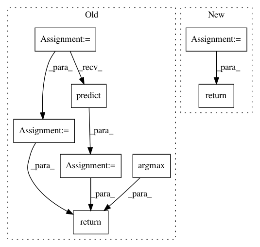

b2892275c7365da5df5ea96cbef587ea1ba6407e,art/utils.py,,compute_success,#Any#Any#Any#Any#Any#Any#,287
Before Change
:return: Percentage of successful adversarial samples.
:rtype: `float`
adv_preds = np.argmax(classifier.predict(x_adv, batch_size=batch_size), axis=1)
if targeted:
rate = np.sum(adv_preds == np.argmax(labels, axis=1)) / x_adv.shape[0]
else:
preds = np.argmax(classifier.predict(x_clean, batch_size=batch_size), axis=1)
rate = np.sum(adv_preds != preds) / x_adv.shape[0]
return rate
def compute_accuracy(preds, labels, abstain=True):
After Change
:return: Percentage of successful adversarial samples.
:rtype: `float`
attack_success = compute_success_array(classifier, x_clean, labels, x_adv, targeted, batch_size)
return np.sum(attack_success) / x_adv.shape[0]
def compute_accuracy(preds, labels, abstain=True):
In pattern: SUPERPATTERN
Frequency: 4
Non-data size: 8
Instances
Project Name: IBM/adversarial-robustness-toolbox
Commit Name: b2892275c7365da5df5ea96cbef587ea1ba6407e
Time: 2020-03-29
Author: mathsinn@ie.ibm.com
File Name: art/utils.py
Class Name:
Method Name: compute_success
Project Name: IBM/adversarial-robustness-toolbox
Commit Name: ef005b7af46c99ab6aec809a56bb29c9aaeaff73
Time: 2020-04-06
Author: mathsinn@ie.ibm.com
File Name: art/utils.py
Class Name:
Method Name: compute_success
Project Name: scikit-multiflow/scikit-multiflow
Commit Name: 25723006dbd088a24215b23242e55d06e12afd8e
Time: 2019-04-14
Author: andrecruz97@gmail.com
File Name: src/skmultiflow/meta/additive_expert_ensemble.py
Class Name: AdditiveExpertEnsemble
Method Name: predict
Project Name: scikit-multiflow/scikit-multiflow
Commit Name: 7e0e9b744c1c307d3e42f8feae764ee090fad1ce
Time: 2019-04-08
Author: andrecruz97@gmail.com
File Name: src/skmultiflow/meta/dynamic_weighted_majority.py
Class Name: DynamicWeightedMajority
Method Name: predict